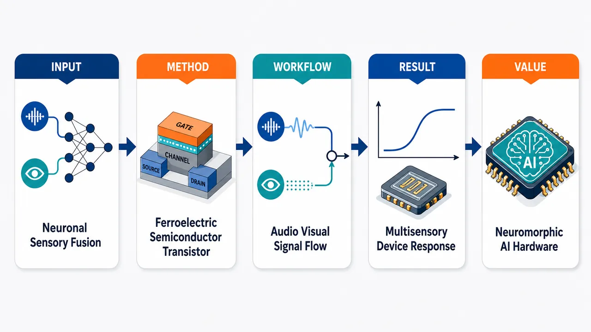
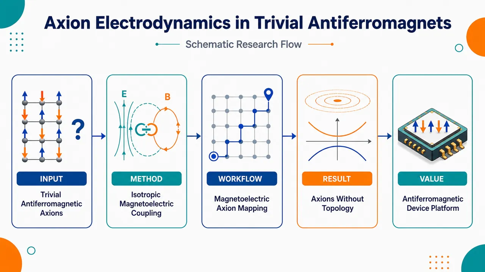
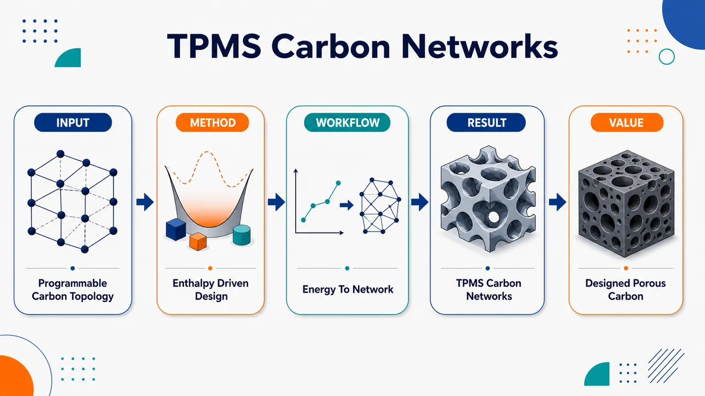
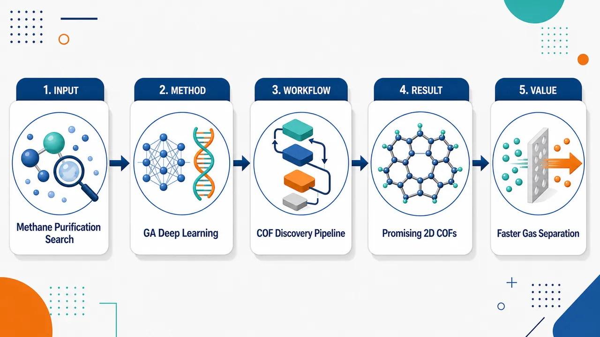

AI × Science 文献日报 2026/06/20
聚焦 AI × 物理 / 化学 / 材料交叉方向，自动过滤明显偏题的医学、教育与社会科学内容，并按主题重新排版，便于快速深读。
AI | 物理 | 化学 | 材料 | 交叉学科
原始候选 13 篇中，已剔除 0 篇明显偏离主线的内容，并从剩余 13 篇主线相关文献中精选 11 篇进入日报页，优先保留 AI × 物理 / 化学 / 材料交叉与关键计算方法工作。
核心关注（ML × ferro / 凝聚态）
3 篇今天的实质进展从单纯预测转向“搜索—器件—拓扑响应”闭环：2D COF 用遗传算法+深度学习做甲烷纯化结构发现，器件侧用铁电-半导体晶体管实现视听整合，反铁磁侧把轴子电动力学落到拓扑平庸材料。对比 NbOI2、BaTiO3 铁电势能面和 CrI3、CrSBr 磁交换常用的 DFT+U、equivariant GNN、MACE、NEP，这三篇更强调可测功能标签而非只报形成能或带隙。ML × 凝聚态的靶标正在从材料静态性质扩展到吸附选择性、突触/多模态响应、线性磁电张量与轴子角等功能量。
-
01遗传算法与深度学习发现甲烷纯化二维 COFDiscovery of 2D hypothetical covalent organic frameworks for methane purification via genetic algorithm and deep learning
📄 摘要：面向甲烷纯化，论文题名显示结合遗传算法与深度学习搜索假想二维共价有机框架；给定摘要仅含出版信息，未披露筛选规模、吸附选择性或最佳结构。
💡 亮点：用遗传算法和深度学习筛选甲烷纯化二维 COF。
📐 方法要点：遗传算法生成二维 COF，深度学习代理筛选甲烷纯化候选。
🔗 相关工作关联：呼应多孔材料逆向设计、MOF/COF 吸附代理模型、高通量 GCMC。
💡 对你方向的启示：把拓扑生成、可合成性约束和吸附选择性并入主动学习闭环。
-
02仿生铁电半导体晶体管实现神经多感官整合Biomimetic ferroelectric-semiconductor transistor enables neuronal multisensory integration
📄 摘要：构建仿生铁电-半导体场效应晶体管，用器件响应模拟大脑视听信息整合；摘要强调面向人工智能的多感官整合功能，未给出电压、保持或识别率数值。
💡 亮点：铁电-半导体晶体管模拟视听神经整合。
📐 方法要点：铁电-半导体晶体管以极化调控沟道，实现视听多感官整合。
🔗 相关工作关联：呼应 FeFET、铁电突触晶体管、忆阻神经形态器件、多模态感知计算。
💡 对你方向的启示：器件数据可作为 ML 模型标签，学习极化历史、脉冲编码与识别性能映射。
-
03拓扑平庸反铁磁体中的轴子电动力学Axion electrodynamics in a topologically trivial antiferromagnet
📄 摘要：在具各向同性线性磁电响应的拓扑平庸反铁磁材料中实现轴子电动力学；摘要指出此前缺乏实验材料实现，此工作给出反铁磁体系中的实验路径。
💡 亮点：拓扑平庸反铁磁体可承载轴子电动力学。
📐 方法要点：在拓扑平庸反铁磁体中利用各向同性线性磁电响应实现轴子电动力学。
🔗 相关工作关联：呼应反铁磁自旋电子学、磁电耦合、轴子绝缘体、拓扑响应材料搜索。
💡 对你方向的启示：可将磁空间群、DFT+U 磁电张量和对称性特征纳入 ML 筛选。
今日摘要
总览：今日 11 篇覆盖计算材料、量子/拓扑物性、铁电神经形态器件、能源材料与环境材料。代表性工作包括用遗传算法与深度学习筛选二维共价有机框架用于甲烷纯化、在拓扑平庸反铁磁体中实现轴子电动力学、以及铁电-半导体晶体管模拟视听多感官整合。
热点：AI 与高通量方法继续进入材料发现和能源系统诊断，从多孔框架筛选延伸到全球光伏空间约束识别。低维与拓扑材料方向突出可控量子态和新型电磁响应，如扭转 hBN 量子光源、反铁磁轴子响应和 TPMS 类碳网络。电化学与太阳能材料强调界面调控和绿色制备，包括 NiFe 合金晶格应变调控硝酸盐还原、含水微乳液喷涂有机太阳能电池。部分预印本摘要信息有限，结论强度需等待完整论文或同行评议。
今日文献
11 篇 · 4 含图深析-
01
📊 含图深析
💡 亮点：铁电-半导体晶体管模拟视听神经整合。
📖 展开分析 + 配图

研究问题如何在硬件器件层面模拟大脑神经元对视觉与听觉信号的多感官整合，而不是依赖传统算法或复杂外部电路完成多模态融合。创新方法提出仿生铁电-半导体场效应晶体管，将铁电极化的可调、可记忆电学响应与半导体沟道调控结合，用单个神经形态器件模拟视听信号在神经元中的融合与权重调节。工作流程输入端施加代表视觉与听觉刺激的电信号；铁电层产生极化状态变化并调制半导体沟道电导；器件电流响应叠加并体现感官融合强度；最终输出类似神经元整合后的电学响应，用于表征视听多感官信息整合。关键结果成功构建铁电-半导体晶体管神经形态器件，并展示其可模拟大脑视听信息整合行为；结果表明该器件具备在器件级实现多感官融合的潜力，但摘要未提供能耗、速度、保持时间或识别准确率等具体数值指标。应用价值为人工智能多感官感知系统提供更接近生物神经机制的硬件基础，有望减少多模态融合对复杂算法和大规模电路的依赖，推动低功耗、类脑化、端侧智能感知芯片发展。核心概览
该论文构建仿生铁电-半导体场效应晶体管，用器件响应模拟大脑视听多感官整合，属于神经形态器件/人工智能硬件方向。
方法要点
- 采用铁电-半导体场效应晶体管作为仿生神经形态器件平台。
- 利用器件的电学响应来模拟大脑对视觉与听觉信息的整合过程。
- 面向人工智能中的多感官信息融合功能进行器件级实现。
- 摘要未详述具体材料体系、器件结构参数、驱动电压、测试协议或电路实现细节。
关键结果
- 成功构建了一种仿生铁电-半导体晶体管器件。
- 该器件可用于模拟神经系统中的视听信息整合行为。
- 摘要强调其在人工智能多感官整合功能中的潜在应用。
- 摘要未给出关键性能数值，例如工作电压、保持时间、能耗、响应速度或识别准确率。
创新性判断
- 可能的新颖点在于将铁电-半导体晶体管用于模拟“神经元式”多感官整合，而不仅是单一突触可塑性或单模态感知。
- 若器件能在单器件层面完成视听信号融合，相比传统依赖算法或复杂电路的多模态融合可能具有硬件简化优势；但摘要未详述实现机制，需全文确认。
- 铁电材料的极化调控可能为可记忆、可调权重的神经形态响应提供基础，但具体物理机制和性能优势摘要未详述。
- 总体看，该工作的新颖性可能体现在“铁电-半导体器件 + 多感官神经整合功能”的结合，创新程度需依赖全文中的对比实验和性能指标进一步判断。
-
02
💡 亮点：拓扑平庸反铁磁体可承载轴子电动力学。
📖 展开分析 + 配图

研究问题轴子电动力学长期主要依赖拓扑绝缘体或拓扑非平庸能带体系实现；论文要回答的核心问题是：在没有拓扑非平庸能带结构的普通反铁磁材料中，是否也能通过其磁电性质产生轴子电磁响应。创新方法提出把“各向同性线性磁电响应”作为实现轴子电动力学的关键物理条件，将研究平台从拓扑绝缘体转向拓扑平庸反铁磁体；Aha 点在于：不需要拓扑非平庸材料，只要反铁磁材料具有类似标量轴子项的各向同性磁电耦合，就可承载轴子电动力学。工作流程选取拓扑平庸反铁磁材料作为平台 → 分析其线性磁电张量 → 寻找或构造各向同性磁电响应分量 → 将该标量磁电耦合映射为轴子电动力学中的轴子项 → 推导可实验观测的电磁响应路径。关键结果论文指出拓扑平庸反铁磁体也可以实现轴子电动力学，关键条件是材料具备各向同性线性磁电响应；该结果把轴子电磁响应的候选体系从拓扑非平庸材料扩展到更广泛的反铁磁磁电材料，并提出可能的实验实现方向。应用价值为实验寻找轴子电动力学提供新的材料路线：可在普通反铁磁磁电材料中探索轴子响应，降低对拓扑绝缘体表面态或复杂拓扑能带的依赖；有助于发展新型磁电探测、拓扑电磁响应调控和反铁磁自旋电子学器件。核心概览
该论文属于凝聚态物理/拓扑电磁响应方向，提出在拓扑平庸、具有各向同性线性磁电响应的反铁磁材料中实现轴子电动力学，并给出可能的实验材料路径。
方法要点
- 研究对象是拓扑平庸的反铁磁材料，而非传统拓扑绝缘体或拓扑非平庸体系。
- 利用材料中的各向同性线性磁电响应来实现轴子电动力学。
- 论文强调反铁磁体系可作为实验实现轴子电动力学的平台。
- 具体理论模型、材料筛选标准、计算方法或实验方案摘要未详述。
关键结果
- 摘要明确指出：可在拓扑平庸反铁磁材料中实现轴子电动力学。
- 摘要指出该体系需要具备各向同性线性磁电响应。
- 摘要称此前缺乏实验材料实现，而该工作提供了反铁磁体系中的实验路径。
- 是否已给出具体候选材料、测量信号或定量响应强度，摘要未详述。
创新性判断
- 可能的新颖点在于：将轴子电动力学的实现从拓扑非平庸材料拓展到拓扑平庸反铁磁材料中。
- 另一潜在创新是强调“各向同性线性磁电响应”可作为实现轴子电动力学的关键物理条件。
- 相比依赖拓扑绝缘体表面态或拓扑能带结构的方案，该工作可能提供了更贴近实际反铁磁材料的实验实现路线。
- 但具体新颖性强弱取决于全文中是否给出明确材料、可测实验信号及与已有磁电材料工作的区分；这些摘要未详述。
-
03
💡 亮点：以焓驱动策略编程类 TPMS 碳网络拓扑。
📖 展开分析 + 配图

研究问题如何利用热力学焓效应，主动控制类三周期极小曲面（TPMS-like）碳网络的拓扑形态，使碳网络不再只是随机形成或被动表征，而是能够像“结构蓝图”一样被定向编程。创新方法提出“焓驱动拓扑编程”思路：把焓贡献作为碳网络形成与拓扑选择的核心调控因子，通过热力学稳定性差异引导类 TPMS 碳骨架形成特定连通方式与曲面网络，实现从能量规则到空间拓扑结构的映射。工作流程输入目标类 TPMS 碳网络拓扑与热力学约束；分析不同碳网络构型的焓稳定性；利用焓差驱动结构选择与拓扑重排；形成具有特定连通关系的三维周期碳网络；输出可编程的类 TPMS 碳拓扑结构。关键结果论文核心结果是实现或提出了由焓因素主导的类 TPMS 碳网络拓扑编程，表明焓贡献可能决定碳骨架的形成路径、稳定结构与拓扑选择；摘要未提供具体能量数值、结构参数、性能提升或应用测试数据。应用价值该研究为三维多孔碳材料、周期碳骨架和复杂拓扑碳网络提供了新的设计原则，可用于未来按需构筑具有特定孔道、连通性、力学稳定性或电子传输特征的先进碳材料。核心概览
该论文属于碳材料/拓扑结构设计方向，主题是利用焓驱动机制对类 TPMS 碳网络进行拓扑编程；摘要未提供具体实验与性能信息。
方法要点
- 研究对象为类三周期极小曲面（TPMS-like）的碳网络结构。
- 核心思路是通过“焓驱动”机制实现碳网络拓扑的可编程调控。
- 题名暗示关注结构拓扑与热力学稳定性之间的关系。
- 摘要未详述合成路线、前驱体体系、表征方法、计算方法或结构参数。
- 摘要未详述是否采用实验合成、理论模拟，或二者结合。
关键结果
- 摘要明确表明论文实现或提出了对类 TPMS 碳网络的“拓扑编程”。
- 摘要强调该过程由焓因素驱动，说明热力学焓贡献可能是结构形成或调控的关键。
- 摘要未提供任何具体性能数据、结构参数、相变路径、能量数值或应用验证结果。
- 摘要未详述所得碳网络的稳定性、孔结构、导电性、力学性质或其他功能表现。
创新性判断
- 可能的新颖点在于：将“焓驱动”作为设计原则，用于调控类 TPMS 碳网络的拓扑形态，而不仅是被动合成或后验表征。
- 相比常规碳网络构筑工作，该研究可能更强调热力学机制与拓扑可编程性的耦合。
- 题名中的“Topological Programming”暗示其目标不是单一结构制备，而是可控地选择或设计不同拓扑网络。
- 以上创新性判断仅基于题名和极简摘要；由于摘要未详述实验、计算和对比对象，无法确定其相对现有工作的具体突破程度。
-
04
📊 含图深析
💡 亮点：用遗传算法和深度学习筛选甲烷纯化二维 COF。
📖 展开分析 + 配图

研究问题如何在巨大的假想二维共价有机框架结构空间中，快速找到适合甲烷纯化的高潜力多孔材料，避免仅靠人工经验或传统枚举筛选造成的搜索低效。创新方法将遗传算法的结构进化搜索与深度学习的性能预测结合，形成面向目标性能的材料发现策略：像“进化筛选器”一样不断生成、选择和优化二维COF候选结构，用机器学习快速判断其甲烷纯化潜力。工作流程输入二维假想COF结构构建单元或候选结构空间；遗传算法生成并迭代优化COF结构；深度学习模型对候选材料的甲烷纯化相关性能进行快速预测；根据预测结果筛选高潜力结构；输出用于甲烷纯化的优选二维假想COF材料库。关键结果论文的核心结果是提出并应用一套遗传算法—深度学习联合框架，用于发现甲烷纯化导向的二维假想COF；摘要未给出具体筛选数量、最佳材料、吸附选择性、工作容量或相对性能提升数据。应用价值该研究为甲烷纯化材料开发提供了计算驱动的候选发现路线，可用于缩短多孔材料筛选周期，降低实验试错成本，并为COF在天然气提纯、能源气体分离和吸附分离工艺中的应用提供材料线索。核心概览
该论文面向甲烷纯化，探索用遗传算法与深度学习发现假想二维共价有机框架，属于计算材料发现/多孔材料筛选方向。
方法要点
- 研究对象是二维假想共价有机框架（2D hypothetical COFs）。
- 目标应用是甲烷纯化，可能涉及气体吸附/分离性能评估，但摘要未详述具体体系。
- 题名表明采用遗传算法进行结构或候选材料搜索。
- 题名表明结合深度学习用于材料发现流程，具体模型、输入特征和训练数据摘要未详述。
- 是否使用分子模拟、吸附等温线计算或高通量筛选，摘要未详述。
关键结果
- 摘要明确的信息仅表明论文旨在发现用于甲烷纯化的二维假想COF材料。
- 摘要未披露筛选规模、候选结构数量、性能指标、吸附选择性、工作容量或最佳材料。
- 摘要未说明与已有材料或基准方法相比的性能提升。
- 摘要未给出实验验证或计算验证细节。
创新性判断
- 可能的新颖点在于将遗传算法与深度学习结合，用于定向搜索二维假想COF材料，而非仅依赖传统枚举或经验筛选；但具体实现摘要未详述。
- 面向甲烷纯化的二维COF假想结构发现可能具有应用导向的新意，但是否优于已有COF/MOF筛选工作无法从摘要判断。
- 若论文确实实现了生成式搜索与性能预测的闭环优化，则相对常规高通量筛选可能更具效率和探索空间优势；但摘要未提供足够信息确认。
- 05
- 06
- 07
- 08
- 09
- 10
- 11